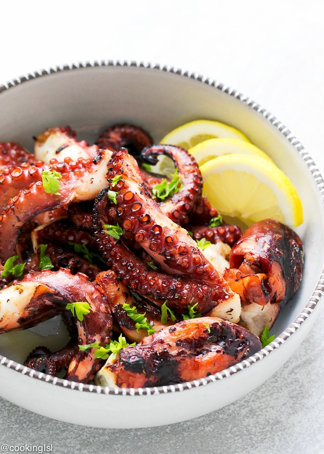

Grilled Octopus

What is Grilled Octopus ?
It is pretty self explanatory. It is finished with a drizzle of extra-virgin olive oil, fresh lemon juice, salt, and a sprinkling of parsley. Simple, yet deliciously satisfying!
Recipe Overview
Step 0: Cooking the Octopus
Boil it first, then let it cool down to room temperature and quickly grill it, so it gets a nice char.
Step 1: Seasoning The Octopus
Season it with olive oil, lemon juice, salt, pepper, dried oregano, fresh parsley and garlic (optional).
Step 2: Add Some Creativity
After grilling you can use a mix of your favorite spices, if the ones I’m suggesting don’t sound good to you.
Ingridients
- 2 pounds fresh octopus — (baby, medium or large)
- olive oil
- 2 garlic cloves — , roughly chopped
- Juice from 1 lemon
- salt and pepper to taste
- 1/2 tsp dried oregano
- 2 tsp chopped fresh parsley
Steps
- Place octopus in a pot and cover with enough water. Bring to a boil. Boil for 40 minutes.
- Remove octopus from hot water, rinse and place in a bowl. Drizzle with olive oil and add chopped garlic.
Let is cool and rest at room temperature, for 30 minutes to 1 hour.
- Preheat a gas grill to medium-high heat.
- Slice octopus tentacles. Grill for 3-4 minutes per side, until charred
- Remove from heat and place in a bowl.
- Drizzle with olive oil and add lemon juice. Season with salt and pepper.
Sprinkle some oregano (optional) and parsley on top. You can also add some chopped garlic, too (optional).
Return to Main Page